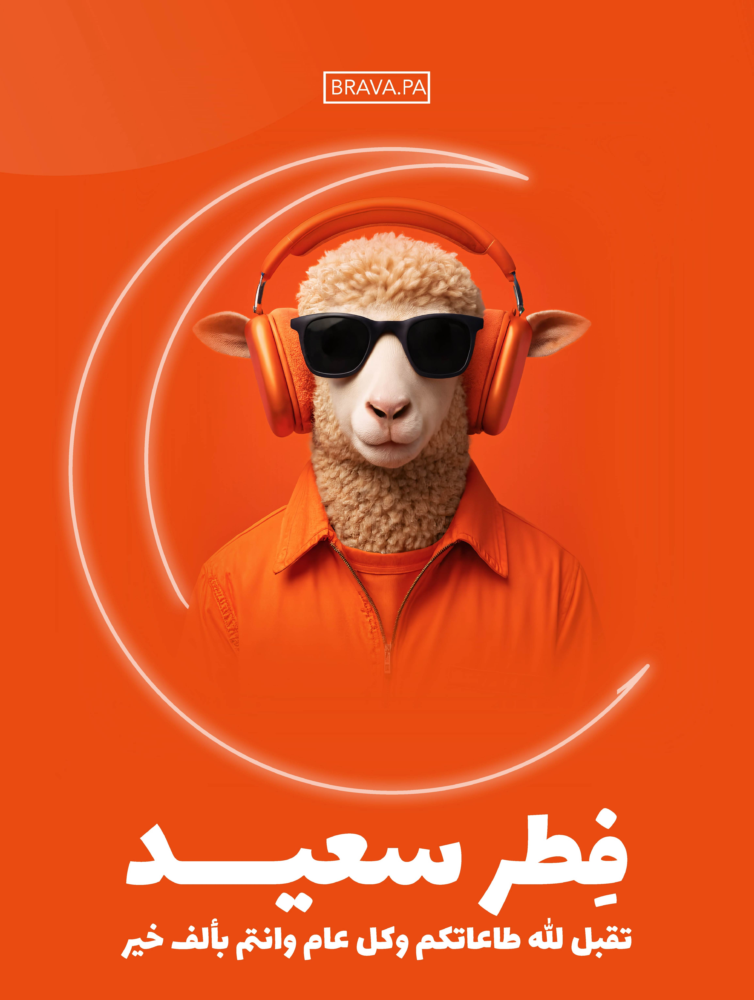
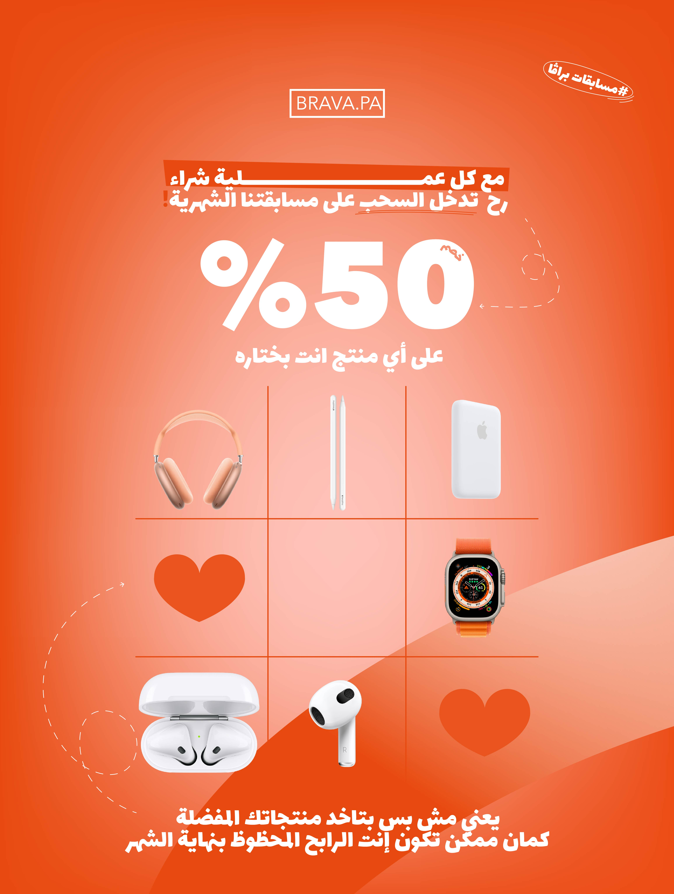
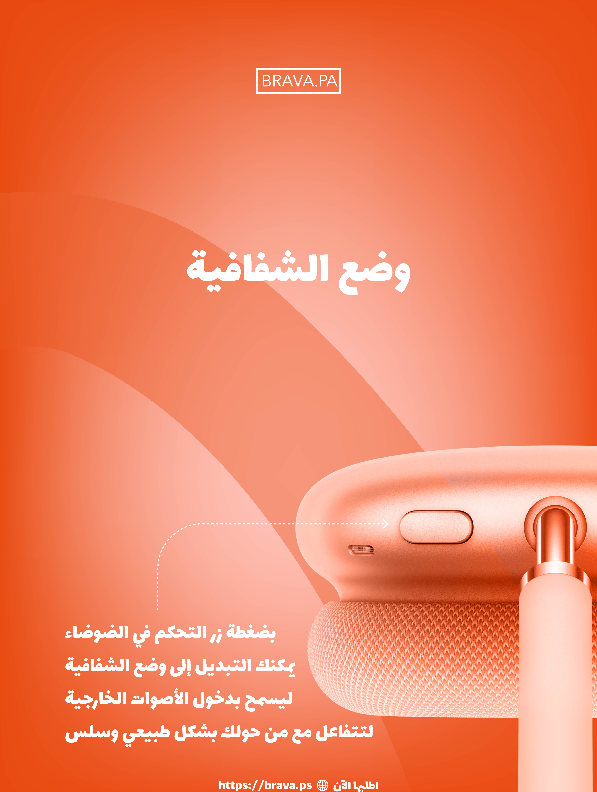
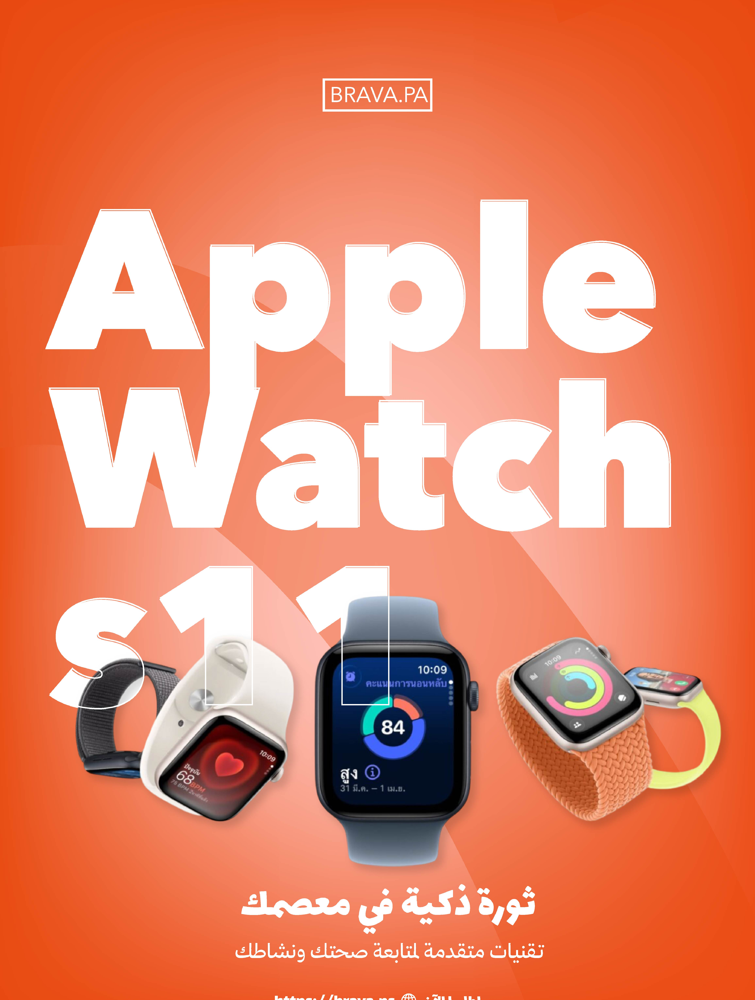
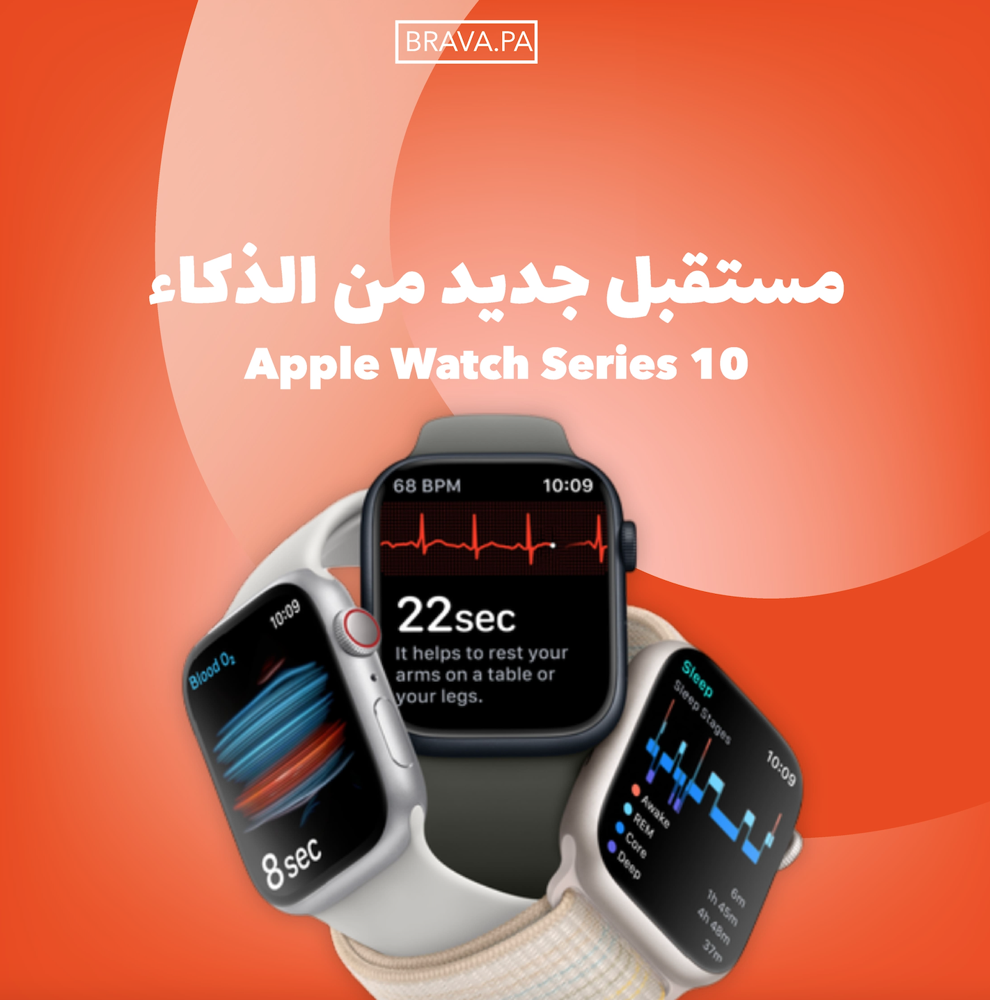
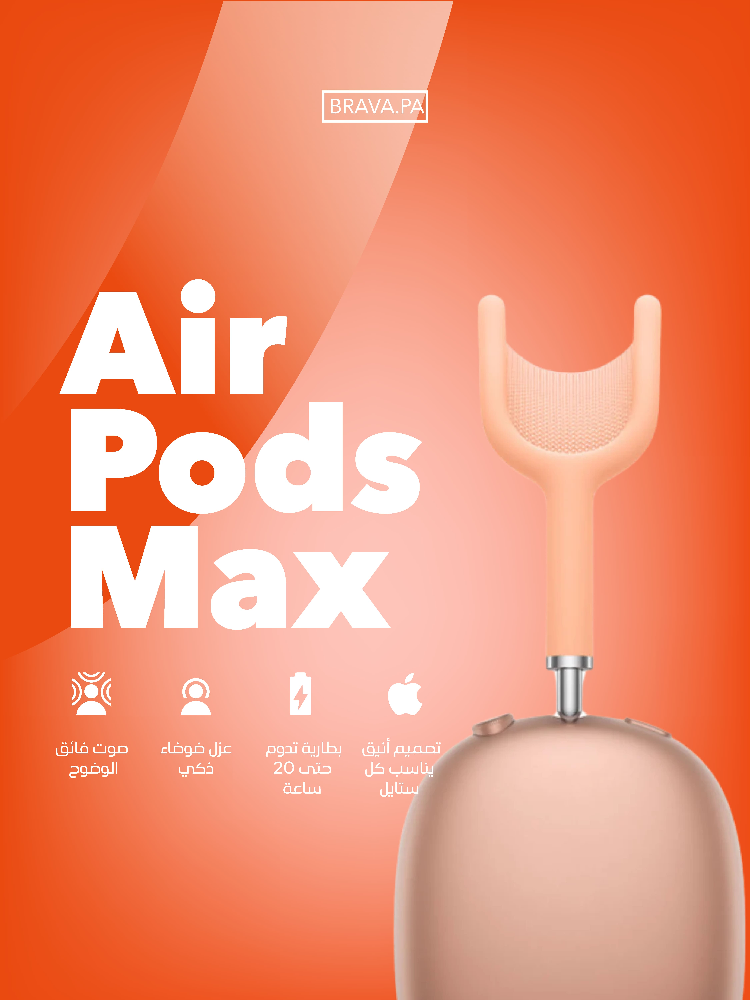

02 / Selected Project
Social
Media
Category
Social Media · Digital Content
Designer
Lana Othman · Ramallah, Palestine







Social Media · Digital Content
Lana Othman · Ramallah, Palestine





